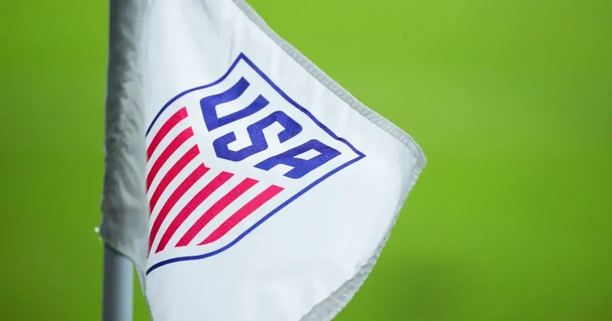

US withdraws from U17 World Cup in Qatar over security fears

The United States has withdrawn from the upcoming Under-17 World Cup in Qatar because of security concerns in the Middle East, according to US media reports. Players were reportedly told of the decision just over a week before the tournament is due to start on November 19. US Soccer had not publicly confirmed the withdrawal or responded to a request for comment.
The tournament is scheduled to feature 48 teams. The United States had been drawn in a group with Montenegro, Chile and Algeria. The reported decision comes amid a conflict that began in February with joint US-Israeli strikes on Iran, followed by Iranian attacks on targets including Gulf countries allied with Washington. Diplomatic efforts to end the conflict have been accompanied by repeated threats from the United States and Israel to resume strikes on Iran.
The security situation has also affected other sporting events in the region. The WTA Finals, originally scheduled for Saudi Arabia, are instead being held at Indian Wells in the United States. The Formula One Grand Prix in Jeddah was cancelled, while the Bahrain race was called off and later rescheduled under the same name in Malaysia. Several events in Saudi Arabia have also been cancelled or postponed in recent weeks following attacks by Yemen’s Houthi forces.
The Under-17 World Cup became an annual tournament last year, and Qatar is set to host it for five consecutive years. FIFA said in 2024 that selecting one host for multiple editions would allow the tournament to use existing football infrastructure and support efficiency and sustainability. Qatar also hosted the men’s World Cup in 2022.
Source: Vanguard